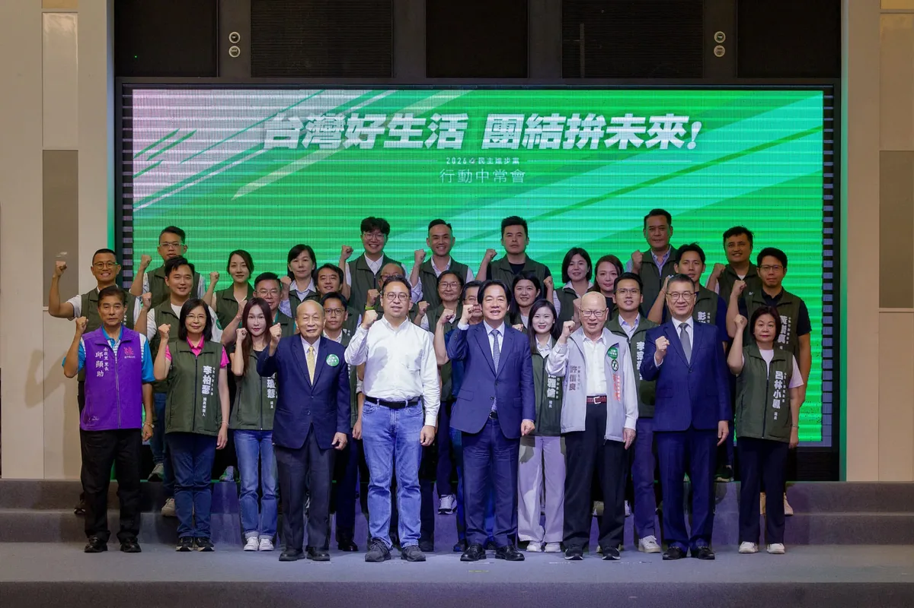
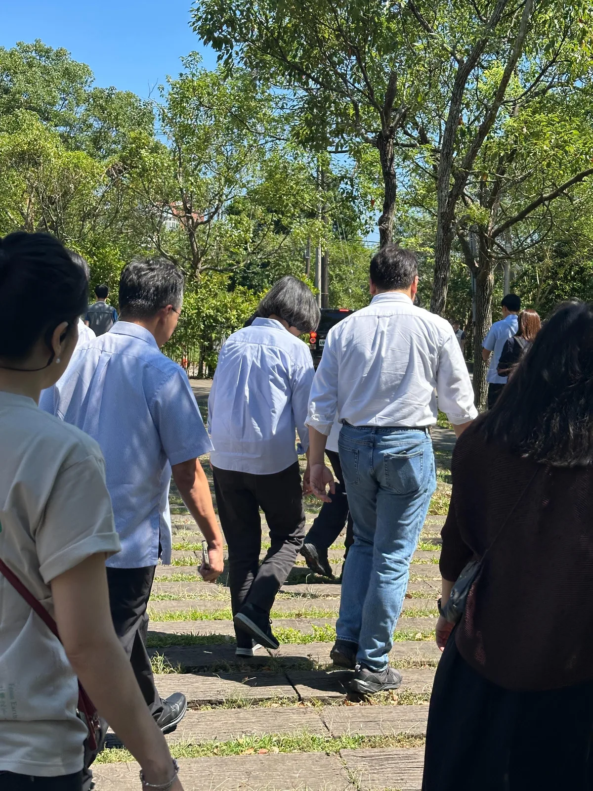
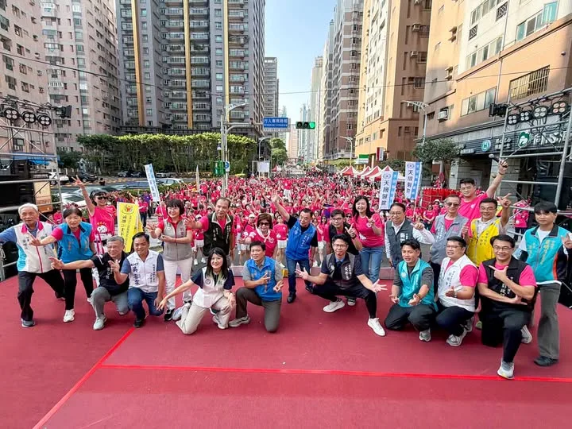
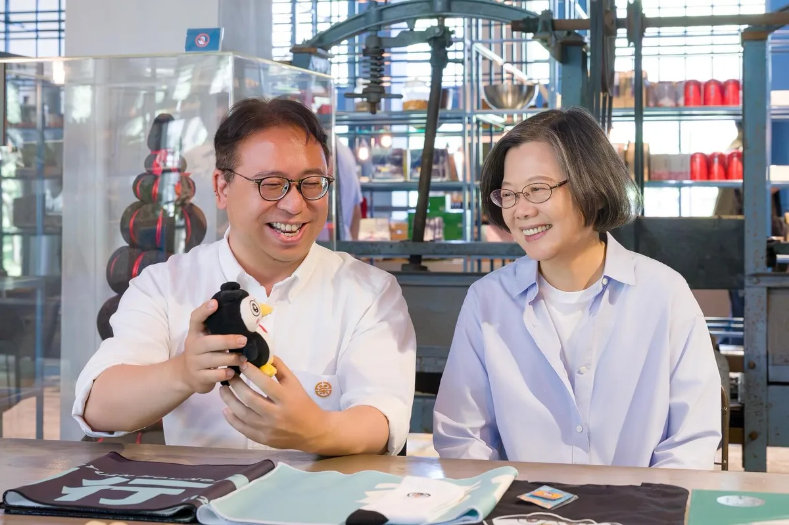

@schuanglawyer:一早到中壢參加中秋健走！今晚的萬人封街烤肉，我會再回來，中壢的朋友晚點見喔🙋
Accounts
| 平台 | 帳號 | 已收錄貼文 | 最後更新 |
|---|---|---|---|
| https://www.facebook.com/SCHuangLawyer/ | 131 | 2026-09-25 09:34 | |
| https://www.instagram.com/schuanglawyer/ | 183 | 2026-09-24 23:32 | |
| Threads | https://www.threads.com/@schuanglawyer | 226 | 2026-09-25 09:35 |
Timeline
顯示 544 / 544 則
@schuanglawyer:一早到中壢參加中秋健走！今晚的萬人封街烤肉，我會再回來，中壢的朋友晚點見喔🙋
杰伴烤肉、杰伴賞月🌕世杰祝福大家中秋節快樂，月圓人團圓💖 這段時間，我持續跑遍桃園各地的中秋活動，和市民朋友見面問候，親自傳達我最真摯的祝福。 在這個團圓的日子裡，祝大家幸福圓滿、闔家平安！
今晚趕到復興區，參加中秋晚會！感謝大家熱情的祝福跟鼓勵❤️
@schuanglawyer:黃世杰南桃園競選總部成立大會，就在下週六！ 賴清德總統將來到現場，還有董事長樂團 、雷昇傳藝劇團 、無双樂團，帶來精彩演出！ 邀請您杰伴同行，成為改變桃園的力量，一起讓心桃園動起來💖 📌時間｜10/3（六）18:00進場 📌地點｜中壢區環中東路、後興路二段周邊空地

@schuanglawyer:我是在地子弟黃世杰，我受這片土地栽培，我的心在桃園，成家立業也在桃園，桃園是我的家鄉，是我實踐夢想的地方。 這段時間，我走遍桃園各區，聽見市民對於改變現狀的渴望，也看見這座城市的各種可能，以及被壓抑的巨大潛能。 我深知，現在的桃園正站在關鍵十字路口。市長作為市政發動機、民意接收站，需要「心在桃園、根在桃園」，唯有真正了解地方需求的人，才能帶領這座城市向前。 感謝民進黨主席賴清德總統 @william_chingte ，今天移師桃園舉辦行動中常會，我要向大家報告，我的家鄉桃園擁有獨一無二的優勢，更匯聚了大家對未來的無限期待。 我有決心、更有行動力，我們要匯聚最大的力量，把過去三年多的停滯，化作未來三十年的爆發力。讓真正準備好的市長，帶領桃園迎向光榮、走向世界、奔向未來！ 11/28懇請支持黃世杰，支持桃園隊全壘打！一起找回令人動心的城市，讓心桃園動起來💖
@schuanglawyer:行動中常會在桃園！ 中午我在「午青LIVE」線上直播，由青年代表米琪、Penny來杰伴出任務💪

@schuanglawyer:小英總統來了！今天非常榮幸邀請蔡英文總統 @tsai_ingwen 來到大溪老茶廠🫖 大溪擁有深厚文化底蘊跟觀光潛力，從大溪老街、大溪木藝生態博物館、李騰芳古宅、武德殿到六二四故事館，都是值得一去再去，我也帶著孩子來過的私房景點。 小英總統分享，上次到大溪老茶廠是七年前，他特別勉勵我：「我總統都選上了，你也要選上市長。」聽完真的充滿動力，我一定會跟緊學姐腳步全力衝刺，讓心桃園動起來💖 今天也特別跟小英學姐介紹我的募款小物「企鵝阿爸」🐧學姐笑說眼睛真的有像，大家覺得呢？

有人認得這個背影嗎？

還記得昨晚在中壢夜市的感動嗎？ 倒數68天，我們要把這樣的團結跟熱情延續下去！ 洋流來襲、杰伴同行，11/28台北桃園一起贏💖 @pumashen
@schuanglawyer:看到好幾則留言催我去睡覺⋯⋯ 好啦，明天起床再繼續拚！ 謝謝大家，晚安。

一早到中壢參加中秋健走！今晚的萬人封街烤肉，我會再回來，中壢的朋友晚點見喔🙋
@schuanglawyer:今晚趕到復興區，參加中秋晚會！ 感謝大家熱情的祝福跟鼓勵❤️ @hsiehchoju

@schuanglawyer:法律人杰伴同行 .ᐟ 律師後援會成立⚖️ 桃園的公共事務，需要更多法律專業的律師朋友交流與參與！10/16(五)邀請法律界律師夥伴齊聚，分享對桃園城市發展、公共政策與法治議題的觀察與想法💡 法律人杰伴交流，為桃園帶來更多專業觀點！ 【律師後援會成立 .ᐟ 】 活動時間｜10/16（五） 參加資格｜限具律師身分者 報名方式｜採事前報名制 報名連結請見留言👇🏻
黃世杰南桃園競選總部成立大會，就在下週六！ 賴清德總統 @william_chingte 將來到現場，還有董事長樂團 @thechairman_tw 、雷昇傳藝劇團 @leishengartgroup_1997 、無双樂團 musouband ，帶來精彩演出！ 邀請您杰伴同行，成為改變桃園的力量，一起讓心桃園動起來💖 📌時間｜10/3（六）18:00進場 📌地點｜中壢區環中東路、後興路二段周邊空地

桃園是國門之都，有山有海，有鄉村也有都會，我們是全國工業產值第一的城市，產業鏈完整多元。這裡有引領世界潮流的AI、科技、電腦產業，也有傳統的汽車、機械、食品產業。百工百業在桃園，都有蓬勃發展的機會。 感謝民進黨主席賴清德總統 @william_chingte ，今天移師桃園舉辦行動中常會，我要向大家報告，我的家鄉桃園擁有獨一無二的優勢，更匯聚了大家對未來的無限期待。升格直轄市以來，我們的人口增加超過30萬。 然而，隨著人口迅速成長，建設的速度，卻明顯跟不上城市發展的腳步。 這段時間，我走遍桃園各區，聽見市民對於改變現狀的渴望，也看見這座城市的各種可能，以及被壓抑的巨大潛能。 我深知，現在的桃園正站在關鍵十字路口。市長作為市政發動機、民意接收站，需要「心在桃園、根在桃園」，唯有真正了解地方需求的人，才能帶領這座城市向前。 從產業升級、交通改善、醫療平權，到青年支持、藝文發展與運動環境，針對桃園此刻的各項不足，我已經準備好全方位的具體解方，要用扎實的政策，驅動這座城市大步向前！ 手上這一票，決定了接下來四年，桃園要向世界訴說什麼樣的故事。 我是在地子弟黃世杰，我受這片土地栽培，我的心在桃園，成家立業也在桃園，桃園是我的家鄉，是我實踐夢想的地方。 我有決心、更有行動力，我們要匯聚最大的力量，把過去三年多的停滯，化作未來三十年的爆發力。讓真正準備好的市長，帶領桃園迎向光榮、走向世界、奔向未來！ 11/28懇請支持黃世杰，支持桃園隊全壘打！ 一起找回令人動心的城市，讓心桃園動起來💖
行動中常會在桃園！ 中午我在「午青LIVE」線上直播，由青年代表米琪、Penny來杰伴出任務💪

小英總統來了！今天非常榮幸邀請蔡英文總統 @tsai_ingwen 來到大溪老茶廠🫖 大溪擁有深厚文化底蘊跟觀光潛力，從大溪老街、大溪木藝生態博物館、李騰芳古宅、武德殿到六二四故事館，都是值得一去再去，我也帶著孩子來過的私房景點。 小英總統分享，上次到大溪老茶廠是七年前，他特別勉勵我：「我總統都選上了，你也要選上市長。」聽完真的充滿動力，我一定會跟緊學姐腳步全力衝刺，讓心桃園動起來💖 今天也特別跟小英學姐介紹我的募款小物「企鵝阿爸」🐧學姐笑說眼睛真的有像，大家覺得呢？
@schuanglawyer:黃世杰已經準備好了，張善政呢？我不怕直接辯論市政，但張善政究竟是對這四年的表現沒信心，還是害怕被235萬市民檢視？ 昨天，張善政在議會備詢時，說他不會跟我進行辯論。 我在準備登記書件時，毫不猶豫勾選參加政見發表、且願意接受辯論，希望跟張善政能夠有一場公開交流市政的機會。 因為桃園人實在太悶了，這四年找不到市長、看不到建設、不清楚桃園方向。 這段時日以來，無論我對市政提出任何疑問，張善政幾乎都不正面回應，不然就是請局處首長代打。 如果連民主選舉前的市政辯論，張善政都不願意現身，市民要如何檢視我們對市政問題的理解、政策主張，如何知道我們想把桃園帶到哪裡去？ 桃園市民要看的不是準備好的講稿，而是面對問題時，能不能提出具體答案。 這種「只想單向宣布、不願接受市民提問」的態度，也讓人聯想到近期航空城PCB專區引發的地方爭議。重大產業政策牽涉居民生活與地方發展，本來就應該充分說明、充分溝通。市長選舉也一樣，不能只挑準備好的內容，更應該面對問題、直球回答，讓城市治理方案接受公開檢驗。 所以我要問，張善政究竟是對這四年表現沒信心，還是面對市政問題沒有準備好答案，面對235萬市民會害怕？

@schuanglawyer:最近，我頻繁收到A7居民的反映。大家選擇在這裡落腳，代表對這片新興社區充滿期待。但隨著人口快速成長，各種生活痛點也隨之浮現。 從公園綠地是否充足、公車班次及站點的配置，到孩子的就學需求、污水接管、交通瓶頸，甚至是各項公共設施的建設進度，都是大家最迫切在意的問題。 面對A7重劃區人口急遽增加，市民想知道：市府究竟準備好了嗎？ 這陣子以來，世杰和陳雅倫議員 @yalunchenyalunchen 、李宗豪議員 @tyleehao ，持續針對市民在意的問題，深入討論未來的解方。 昨天我出席樂善里、文樂里和文桃里的中秋活動時，也向大家報告，面對A7重劃區的發展，世杰打算怎麼做！ 世杰深信，市府必須真正看見A7重劃區的急迫需求，加快腳步、提前規劃、積極協調，把民生問題一一解決，讓公共建設跟發展速度一起到位！讓A7動起來，我們一起努力💖

@schuanglawyer:洋流來襲🌊 杰伴同行💖 感謝我的兩位學弟，台北市長候選人沈伯洋 @pumashen 、行政院張惇涵秘書長 @changtunhan ，杰伴來陪掃中壢新明夜市！ 感謝所有市民朋友，有人下午兩三點就來到現場等待，你們的支持跟溫暖，我們都收到了🫶🏻 我是黃世杰，我會跟最用心、最打拚的桃園隊，一起揮出漂亮的全壘打！ 11/28 一起讓台北順起來，心桃園動起來！
@schuanglawyer:杰伴烤肉、杰伴賞月🌕世杰祝福大家中秋節快樂，月圓人團圓💖 這段時間，我持續跑遍桃園各地的中秋活動，和市民朋友見面問候，親自傳達我最真摯的祝福。 在這個團圓的日子裡，祝大家幸福圓滿、闔家平安！
今晚趕到復興區，參加中秋晚會！ 感謝大家熱情的祝福跟鼓勵❤️ @choju_hsieh
法律人杰伴同行 .ᐟ 律師後援會成立⚖️ 桃園的公共事務，需要更多法律專業的律師朋友交流與參與！10/16(五)邀請法律界律師夥伴齊聚，分享對桃園城市發展、公共政策與法治議題的觀察與想法💡 法律人杰伴交流，為桃園帶來更多專業觀點！ 【律師後援會成立 .ᐟ 】 活動時間｜10/16（五） 參加資格｜限具律師身分者 報名方式｜採事前報名制 報名連結請見留言👇🏻
黃世杰南桃園競選總部成立大會，就在下週六！ 賴清德總統將來到現場，還有董事長樂團、雷昇傳藝劇團 Lei Sheng Art Group、無双樂團，帶來精彩演出！ 邀請您杰伴同行，成為改變桃園的力量，一起讓心桃園動起來💖 📌時間｜10/3（六）18:00進場 📌地點｜中壢區環中東路、後興路二段周邊空地

桃園是國門之都，有山有海，有鄉村也有都會，我們是全國工業產值第一的城市，產業鏈完整多元。這裡有引領世界潮流的AI、科技、電腦產業，也有傳統的汽車、機械、食品產業。百工百業在桃園，都有蓬勃發展的機會。 感謝民進黨主席賴清德總統，今天移師桃園舉辦行動中常會，我要向大家報告，我的家鄉桃園擁有獨一無二的優勢，更匯聚了大家對未來的無限期待。升格直轄市以來，我們的人口增加超過30萬。 然而，隨著人口迅速成長，建設的速度，卻明顯跟不上城市發展的腳步。 這段時間，我走遍桃園各區，聽見市民對於改變現狀的渴望，也看見這座城市的各種可能，以及被壓抑的巨大潛能。 我深知，現在的桃園正站在關鍵十字路口。市長作為市政發動機、民意接收站，需要「心在桃園、根在桃園」，唯有真正了解地方需求的人，才能帶領這座城市向前。 從產業升級、交通改善、醫療平權，到青年支持、藝文發展與運動環境，針對桃園此刻的各項不足，我已經準備好全方位的具體解方，要用扎實的政策，驅動這座城市大步向前！ 手上這一票，決定了接下來四年，桃園要向世界訴說什麼樣的故事。 我是在地子弟黃世杰，我受這片土地栽培，我的心在桃園，成家立業也在桃園，桃園是我的家鄉，是我實踐夢想的地方。 我有決心、更有行動力，我們要匯聚最大的力量，把過去三年多的停滯，化作未來三十年的爆發力。讓真正準備好的市長，帶領桃園迎向光榮、走向世界、奔向未來！ 11/28懇請支持黃世杰，支持桃園隊全壘打！ 一起找回令人動心的城市，讓心桃園動起來💖
行動中常會在桃園！ 中午我在「午青LIVE」線上直播，由青年代表米琪、Penny來杰伴出任務💪

@schuanglawyer:有人認得這個背影嗎？

@schuanglawyer:還記得昨晚在中壢夜市的感動嗎？ 倒數68天，我們要把這樣的團結跟熱情延續下去！ 洋流來襲、杰伴同行，11/28台北桃園一起贏💖 @pumashen

最近，我頻繁收到A7居民的反映。大家選擇在這裡落腳，代表對這片新興社區充滿期待。但隨著人口快速成長，各種生活痛點也隨之浮現。 從公園綠地是否充足、公車班次及站點的配置，到孩子的就學需求、污水接管、交通瓶頸，甚至是各項公共設施的建設進度，都是大家最迫切在意的問題。 面對A7重劃區人口急遽增加，市民想知道：市府究竟準備好了嗎？ 這陣子以來，世杰和陳雅倫議員 @yalunchenyalunchen 、李宗豪議員 @tyleehao ，持續針對市民在意的問題，深入討論未來的解方。 昨天我出席樂善里、文樂里和文桃里的中秋活動時，也向大家報告，面對A7重劃區的發展，世杰未來打算這樣做： 🌳加速公園建設 推動滯洪池活化 公園加速公20、樂善、長樂等公園建設，並盤點公滯三、公滯七等滯洪空間，推動適合基地濕轉乾活化 🏃補足社區、運動及社福設施 加速推動公20複合場館，整合幼兒園、公托、日照及市民活動中心，並持續推動文青市民活動中心及運動設施，補足新興生活圈公共服務缺口 🚰解決產專區住宅污水接管問題 主動整合中央、開發及管理單位，釐清管線建置與接管責任，盤點污水處理量能，提出改善方案與明確期程 🚌改善公車班次站點 完善捷運接駁 針對產專區、大型住宅社區等人口集中區域增設站點、調整路線，完善住宅社區、A7捷運站、A8長庚及周邊大眾運輸 🚗打通長慶一街 改善交通瓶頸 推動長慶一街銜接長庚路瓶頸路段，完成用地取得及道路設計，串聯周邊地區路網 🏫加速大崗高中設校 ➊ 掌握A7及坪頂地區未來5至10年學齡人口發展趨勢，依人口成長及住宅開發情形，預先規劃及調整教育量能 ➋ 推進文欣國小、大崗國中校舍增建，持續檢視文青國中小及周邊學校容量 ➌ 加速大崗高中設校規劃的推動期程，健全A7、A8及坪頂地區缺乏的教育缺口 世杰深信，市府必須真正看見A7重劃區的急迫需求，加快腳步、提前規劃、積極協調，把民生問題一一解決，讓公共建設跟發展速度一起到位！讓A7動起來，我們一起努力💖

洋流來襲🌊 杰伴同行💖 感謝我的兩位學弟，台北市長候選人沈伯洋 @pumashen 、行政院張惇涵秘書長 @changtunhan ，杰伴來陪掃中壢新明夜市！ 感謝所有市民朋友，有人下午兩三點就來到現場等待，你們的支持跟溫暖，我們都收到了🫶🏻 我是黃世杰，我會跟最用心、最打拚的桃園隊，一起揮出漂亮的全壘打！ 11/28 一起讓台北順起來，心桃園動起來！